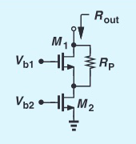

기생 저항 R_P가 생긴 MOS 캐스코드의 출력 저항
주어진 조건
- 제조 중 큰 기생 저항 $R_P$가 MOS 캐스코드에 생김, 위치는 Fig 9.11 ($M_1$의 드레인과 소스 사이)
- 소자 값은 주어지지 않음 (답은 $g_m$, $r_O$, $R_P$ 기호로)
구할 것
- 출력 저항 $R_{out}$

원문 보기
제조하는 동안 큰 기생 저항 $R_P$가 그림 9.11과 같이 캐스코드에 나타났다. 출력 저항을 결정하라.
문제를 이렇게 읽어요
기생 저항은 출력과 중간 노드 사이에 있어요. 위 소자의 드레인–소스 저항과 먼저 합쳐야 해요.
이 문제를 봤을 때 떠올릴 개념과 공식
같은 두 노드 사이 연결이라는 단서에서 병렬(parallel) 저항 $q=r_{O1}\parallel R_P$를 골라요. $g_{m1}$은 위 소자의 트랜스컨덕턴스, $r_{O2}$는 아래 소자의 출력 저항이에요. 근사는 $g_{m1}q r_{O2}\gg q+r_{O2}$일 때만 적용해요.
종이에 쓰는 실제 첫 줄
독립 DC 전압원을 AC 접지로 보내고, 입력 신호도 0으로 놓아요. 출력 노드 전압을 $v_t$, 중간 노드 전압을 $v_x$로 정하고 출력으로 들어오는 시험전류를 $i_t$라 두어요. 구할 저항의 정의는 $R_{out}=v_t/i_t$예요.
위 소자의 게이트는 0 V이므로 $v_{gs1}=0-v_x=-v_x$예요. 출력과 중간 노드 사이의 두 저항은 $q=r_{O1}\parallel R_P$로 묶어요.
그림의 $v_t$ 노드로 $i_t$가 들어오고, $r_{O1}$·$R_P$ 두 가지(합쳐 $q$)와 제어 전류원을 지나 $v_x$로 내려가요. 제어 전류원은 $g_{m1}v_{gs1}=-g_{m1}v_x$를 $v_t$에서 $v_x$ 방향으로 흘려요. 출력에서 중간 노드로 향하는 전류를 양수로 세면
$$i_t=\frac{v_t-v_x}{q}-g_{m1}v_x$$
게이트에는 전류가 흐르지 않고, 중간 노드에 들어온 순전류는 아래 $r_{O2}$로만 빠져나가요. 따라서 $i_t=v_x/r_{O2}$, 즉 $v_x=i_tr_{O2}$예요.
왜 이렇게 푸는지 함께 따라가요
풀이
작은 예시. 문제의 주어진 값이 아닌 $g_{m1}=1$ mS, $q=10$ kΩ, $r_{O2}=20$ kΩ를 골라 전류 방향을 확인해요. $i_t=10$ nA를 넣으면 $v_x=0.20$ mV예요. 저항 가지로 210 nA가 내려오고 제어 전류원은 200 nA를 반대 방향으로 보내야 순전류가 10 nA가 돼요. 그러려면 $v_t-v_x=(210\mathrm{nA})(10\mathrm{k\Omega})=2.10$ mV, $v_t=2.30$ mV예요. $R_{out}=2.30\mathrm{mV}/10\mathrm{nA}=230$ kΩ예요.
출력에 시험전류 $i_t$를 넣고 DC 전압원을 AC 접지로 보내요. 아래 소자는 $v_{gs2}=0$이라 $r_{O2}$예요. 게이트 전류가 없으므로
$$v_x=i_t r_{O2}$$
위의 $v_{gs1}=-v_x$를 출력 KCL에 넣어요.
$$i_t=\frac{v_t-i_tr_{O2}}q-g_{m1}i_tr_{O2}$$
양변에 $q$를 곱하고 $v_t/i_t$를 정리하면
$$R_{out}=q+r_{O2}+g_{m1}q r_{O2}$$
지배항 근사는
$$R_{out}\approx g_{m1}(r_{O1}\parallel R_P)r_{O2}$$
예요.
완성 답과 검산
답과 검산
$R_{out}=(1+g_{m1}r_{O2})(r_{O1}\parallel R_P)+r_{O2}$예요. $R_P\to\infty$이면 원래 식으로 돌아가요. $R_P\to0$이면 정확식은 $r_{O2}$예요. 이때 근사식이 0으로 가는 것은 근사 조건이 깨지기 때문이에요.
이 문제에서 조심할 점
전체 출력 저항에 $R_P$를 병렬로 붙이지 않아요. 같은 날 칠판의 중간 노드–접지 저항 문제와 연결 위치가 달라요.
설명을 닫고 규칙을 적용해 봐요
- $r_{O1}=r_{O2}=r_O$, $g_{m1}r_O=100$이고 $R_P=r_O$이면 정확 $R_{out}$은 $R_P$가 없을 때의 몇 배인가요? 먼저 $R_P$가 어느 두 노드 사이에 있어 무엇과 병렬이 되는지 판단해 보세요.
- 출력으로 시험전류 $i_t$를 넣으면 중간 노드 전압 $v_x$는 $R_P$ 값과 상관없이 얼마인가요? 그렇게 말할 수 있는 전류 경로를 설명해 보세요.
떠올릴 개념·공식
같은 두 노드 사이 연결이라는 단서에서 병렬(parallel) 저항 $q=r_{O1}\parallel R_P$를 골라요. $g_{m1}$은 위 소자의 트랜스컨덕턴스, $r_{O2}$는 아래 소자의 출력 저항이에요. 근사는 $g_{m1}q r_{O2}\gg q+r_{O2}$일 때만 적용해요.
첫 줄
$q=r_{O1}\parallel R_P,\qquad i_t=\frac{v_t-v_x}{q}-g_{m1}v_x$
핵심 판단
전체 출력 저항에 $R_P$를 병렬로 붙이지 않아요. 같은 날 칠판의 중간 노드–접지 저항 문제와 연결 위치가 달라요.
검산
$R_{out}=(1+g_{m1}r_{O2})(r_{O1}\parallel R_P)+r_{O2}$예요. $R_P\to\infty$이면 원래 식으로 돌아가요. $R_P\to0$이면 정확식은 $r_{O2}$예요. 이때 근사식이 0으로 가는 것은 근사 조건이 깨지기 때문이에요.
규칙을 적용하는 순서
$i_t$는 출력으로 유입해 아래 $r_{O2}$로 나가요.
$v_x=i_tr_{O2}$, $v_{gs1}=-v_x$를 KCL에 넣은 뒤 $v_t/i_t$를 구해요.